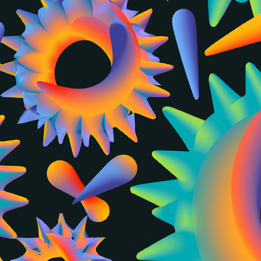

Dhruv Menon
Computational molecular design at the intersection of biology, chemistry & materials science at University of Cambridge
Research
My overarching goal is to harness the power of computation for the large-scale discovery of materials that benefit humanity.
I aim to design versatile materials for applications ranging from drug delivery and gas separation to catalysis.
Progress
Some of our research progress is described in the selected publications below.

Sequence modeling and design from molecular to genome scale with Evo
A unifying model of genomic data

Efficient evolution of human antibodies from general protein language models
Making better antiviral antibodies
Unsupervised evolution of protein and antibody complexes with a structure-informed language model
Making even better antiviral antibodies

Learning the language of viral evolution and escape
Understanding how viruses resist us

Evolutionary velocity with protein language models predicts evolutionary dynamics of diverse proteins
Modeling long-term evolution